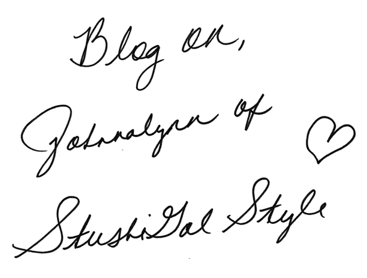

StushiGal Style by Johnnalynn Lynch
Johnnalynn Lynch is the bubbly blogger behind StushiGal Style, which means “prissy” (in a sweet way!) in Jamaican. While she works full time as a business analyst, she always seems to find time for StushiGal Style, noting “if you love what you do, you make time for it.” She’s an advocate for social media engagement (especially with respect to extending her immediate network) and loves peach cobbler (representing Georgia!). Johnnalynn has an undeniably strong work ethic and an intense passion for blogging, which shows us that she’s going no where but up within the style blogosphere.
You probably get this question all the time: but tell us all about the name of your blog “StushiGal Style”! What does it mean, and how did you come up with it? Ha! It’s funny but I actually don’t get that question all the time, and I find it weird that I don’t. My mother and father are from Jamaica and I’m sure most people are familiar with the dialect that’s spoken there. Jamaicans have a lot of funny names to describe people and things.The word “Stushi” is commonly used to describe a girl that is considered to be “Prissy”. One of my ex-boyfriends is Jamaican, and he used to call me that ALL the time. LOL! I guess it stuck because I immediately thought of it when the time came to name my blog.
How long have you been blogging for? I actually started blogging back in 2010 when I went to live in London for 2 months for work. I was so new to it all at the time that I didn’t purchase a domain name or publish those articles to the public. I really just didn’t know what I was doing then. In 2011, I “officially” started StushiGal Style under a different domain name which is a long, crazy story.
What was it that made you really want to start blogging? When did you realize that your blog needed to happen? Fashion and Travel are two things that I’ve been passionate about from as far back as I can remember. When I took my first trip to London, I knew I could expect to see some of the most amazing style I’d ever seen. I made up my mind before leaving for that trip that I would start blogging.
And blog, I did. I wrote every day while I was there. I took a weekend trip to Paris during my stay in London, and blogged there too. It was so inspiring! I realized then that I had something to say, a unique perspective that I wanted to get across. I might not work for Vogue or any other big name publication, but my voice meant something.
You’re a full time business analyst - yet you still have time to upload amazing posts and take beautiful photos. How do you manage it all? Do you have any always-implement rules with regards to time management? OMG, it’s so hard. LOL! I’ve since been promoted to a Project Manager position and I’m even busier now with my “day job” than I used to be. My love for blogging keeps me pushing forward. Because I do have a job, it was important for me to implement a blogging schedule.
I go out on Sundays (come rain or shine) to take pictures for the coming week and literally spend that entire day on editing pictures and writing content. I post on Mondays, Wednesdays and Fridays with only a few exceptions. There’s just no other way to manage it if you have a job. If you love what you do, you make time for it.
You rock pop colors so well! (especially green!) Do you have a favorite pop shade that you always incorporate in your outfits? GREEN! It’s one of my all-time favorite colors. Truthfully, I love any kind of bright, vibrant color. I want people to be happy when they see my pictures and nothing says happy like a beautiful burst of color!
"Do it because you love it and not for financial gain. I've seen a lot of people start blogs and eventually give up because the expectation was for them to make money off of it." — Johnnalynn Lynch
What are your thoughts on social media, generally? You’ve established such a loyal following - on all major platforms! Do you find that it’s helped the growth of your blog? Social media is the key to success for bloggers. I can’t stress that enough. How else can you reach an audience of people that are located both inside and outside of the U.S.? There’s just no other way. It enables you to engage and connect with your readers beyond the pictures and content from blog posts. I truly believe that social media is what brings new readers to my blog and would be at a loss without it. Good SEO just isn’t enough by itself.
Do you use social media to connect with your fans, or do you reserve those communications for your blog/email? My rule is to always engage my social media channels to connect with fans. I have my social media channels connected through Wordpress, so that whenever I publish an article, it automatically feeds into all of those channels. It’s really easy that way.
Speaking of communication - do you ever reach out and network with other bloggers, just to network? If so, how do you go about initiating these conversations? Absolutely! Networking in this industry is SO important! I’m a member of the Southern Blog Society which has been a great way to connect with other local bloggers. They schedule quarterly blog meetups which is a wonderful way to meet some of the girls. We always exchange information when we see each other, and some of those connections have ended up in collaborations and guest blogger opportunities. I’m also a member of IFB (Independent Fashion Bloggers) which is a good way to network with bloggers not located in Atlanta.
Instagram, Twitter, Facebook, or Pinterest: which one is your personal favorite, and why? Instagram is my all-time favorite because it connects me to my readers on more of a personal level. I tend to use it for much more than just the blog, so my readers have a chance to get to know more about my other interests beyond fashion.
Where do you blog from (location)? Do you find that your surroundings (geographically) have a strong influence on your personal style? I live in and blog from Atlanta. Although there are some aspects of Atlanta that inspire my personal style, I would have to say that my travels abroad have been much more of an influence. I’ve been to London, Paris, Indonesia, Italy, Spain, Chile, Jamaica, Argentina, Japan, Malaysia and the Philippines. All of those places have been an inspiration.
What trends are you seeing for spring/summer? Well considering we’ve had Snowpocalypse in Atlanta recently, I haven’t seen much Spring/Summer trends here. But on TV and on the internet, I’m seeing lots of full midi skirts, mesh detail, white and crop tops! I can’t wait for it to get warm here!
What’s one unconventional thing that blogging has taught you (something you did not expect to learn through blogging)? I certainly never expected to learn that blogging can be a business or that it can lead to actual opportunities within the Fashion industry. Since I started my blog, I’ve had so many ideas that expand beyond the blog that could actually result in a new career. I’m excited to start exploring some of those ideas very soon.
Plaid or stripes? Why choose?! Do a print mix and wear them together!
Peach cobbler or carrot cake? Definitely peach cobbler! I’m from Georgia, home of the Georgia Peach!
Red manicure or French manicure? French manicure for me. I’m more of a natural nail color person.
Inspiration can really shape a blog post/photo session. Are there any blogs that you visit on a daily basis for inspiration? Atlantic-Pacific is my all-time favorite. Blair just always gets it right. I also really enjoy Viva Luxury, Tuula Vintage and Kendi Everyday.
If your best friend was about to start her own fashion blog tomorrow, what’s one piece of essential expert advice you’d give her? Do it because you love it and not for financial gain. I’ve seen a lot of people start blogs and eventually give up because the expectation was for them to make money off of it. It really does have to be something you’re passionate about.
